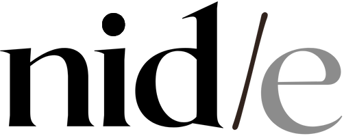

Le pied à l'étrier, puis le rythme
Quatre semaines pour installer Claude dans votre quotidien et vous remettre un premier assistant qui tourne. À prix ferme, et sans aucune suite obligatoire.

Émilie, Mathilde,
Merci pour l'échange du 7 septembre. Une phrase m'est restée en écrivant ce document : « tout seul, on ne le fera pas ». Elle est juste, et elle vaut pour à peu près tout le monde. Ce qui manque rarement, c'est l'envie. Ce qui manque presque toujours, c'est le premier geste et un créneau dans l'agenda.
Alors on commence petit et concret : une mise en route de quatre semaines, deux séances à deux, et un premier assistant qu'on construit pour vous entre les deux. Au bout, vous aurez quelque chose qui tourne sur vos vrais dossiers, et vous déciderez à ce moment-là si vous voulez une suite. Pas avant, et sans rien signer de plus aujourd'hui.
GuillaumeDirecteur France, TRACTR
1Ce qu'on a entendu
Votre journée au vert a posé un constat net : le fond ne pose aucun problème, aucun retour négatif sur vos contenus. C'est la forme qui a vieilli, et c'est le quotidien qui vous mange.
Vous avez passé juillet à prospecter, ça a produit des rendez-vous qui se tiennent en ce moment, et vous n'avez rien pu mettre en place côté outils. Pas par choix, faute de temps.
Trois sujets, dans votre ordre à vous
1. Par où commencer
Le vrai blocage, et il ne se règle pas avec de la documentation. Il faut un premier geste concret, à deux, sur vos vrais outils.
« Il faut que tu nous mettes le pied à l'étrier. »Émilie, le 7 septembre
2. Deux irritants
La prospection au quotidien : relances, réponses aux mails, suivi client. Et votre deck : quinze à vingt slides quasi identiques, dont deux ou trois changent selon le client, repris à la main entre le premier rendez-vous et la propale.
« Ce serait canon. »Émilie, à propos d'un deck préparé automatiquement
3. Des outils qui ne se parlent pas
Wix, Brevo, HubSpot, les formulaires et tableurs Google, Discord. Chacun tient sa part, aucun ne connaît le contexte de l'autre. C'est vous qui faites le rapprochement, à chaque fois.
Ce qu'on va relier
Et Wix ? Vous avez posé la question, on a vérifié
2Deux choses différentes, deux façons de payer
C'est la clarification qu'on doit à ce dossier, et elle explique tous les prix qui suivent. Vous former et fabriquer pour vous, ce sont deux métiers, deux rythmes, et ils ne se facturent pas de la même façon.
La formation, au temps
Les séances, les démonstrations sur vos vrais dossiers, les questions entre deux rendez-vous. Vous en êtes témoins de bout en bout : vous voyez exactement ce que vous achetez, donc ça se compte en heures passées avec vous.
La production, au forfait
Les assistants qu'on fabrique pour vous entre les séances. Vous n'avez pas à compter nos heures ni à porter le risque si c'est plus long que prévu : chaque assistant a un prix annoncé avant d'être lancé.
3La mise en route, et rien d'autre pour l'instant
Un seul engagement à prendre aujourd'hui : quatre semaines, deux séances, un premier assistant qui tourne. C'est le seul « oui » qu'on vous demande, et il contient les deux : de la formation, et de la production.
Séance 1 : cartographier et installer
Qui fait quoi entre vous deux, d'où viennent vos données, ce qui se répète chaque semaine. Installation sur vos deux postes Windows, panorama, quel modèle pour quel usage. On choisit ensemble le premier assistant à construire.
Entre les deux : on construit
Connexion de vos mails, de HubSpot et de votre Drive. Construction de votre premier assistant, celui choisi en séance 1. Rédaction de votre guide en ligne, avec le chapitre d'installation Windows déjà écrit pour un autre accompagnement.
Séance 2 : remise et essai réel
On installe, on essaie l'assistant sur de vrais dossiers, on ajuste devant vous. Puis on vous montre comment le modifier vous-mêmes, et on repère ensemble les deux ou trois usages qui mériteraient une suite.
Un mois plus tard : le point de contrôle
On vérifie que l'usage a tenu, on débloque ce qui a coincé, et on regarde franchement si une suite a du sens pour vous. Si la réponse est non, on vous le dira aussi.
4Le prix
Un montant, ferme, pour un périmètre fermé. Pas d'abonnement qui démarre en silence, pas de reconduction, pas de conditions cachées.
- Deux séances de deux heures, à deux, en visio
- La cartographie de vos usages et votre fichier de contexte
- L'installation sur vos deux postes et la connexion de vos outils
- Votre premier assistant, construit et remis avec son mode d'emploi
- Votre guide en ligne, qui reste chez vous
- Les enregistrements, le support par écrit, et le point à 30 jours
- Aucune reconduction automatique
- Aucun abonnement déclenché par défaut
- Si ça vous a suffi, ça s'arrête là et c'est très bien
- La suite se décide au point de contrôle, pas avant
Facturation : 50 % à la commande, solde à la remise en séance 2.
5Ce qui peut venir après
Rien de ce qui suit n'est à décider aujourd'hui. C'est écrit pour que vous sachiez où mène le chemin, et ce que ça coûte si vous le prenez. Les deux lignes sont indépendantes : vous pouvez prendre l'une sans l'autre.
- Le guide enrichi à chaque séance
- Les enregistrements avec transcript
- Le support par écrit, réponse sous 48 heures ouvrées
- Sans engagement de durée, vous arrêtez quand ça ne sert plus
- Cadré avec vous en séance, puis estimé
- Construit par nous, remis avec son mode d'emploi
- Un prix annoncé d'avance, jamais une facture surprise
- Vous en prenez un, ou aucun
Les trois candidats sortis de notre appel
L'assistant de relance
Il lit vos échanges et HubSpot, et prépare les relances et les réponses dans votre ton. Vous relisez, vous envoyez.
L'assistant deck
À partir des notes du premier rendez-vous, il produit les deux ou trois slides qui changent, dans votre gabarit.
Le point du lundi
Chaque lundi matin, l'état de vos affaires en cours, les relances à faire et les rendez-vous de la semaine, en une page.
Le premier est compris dans la mise en route. Les deux autres se décident plus tard, ou jamais. Si un besoin plus utile apparaît en séance, il passe devant.
6Ce que ça demande de votre côté
Vous avez demandé à savoir ce que ça représente pour vous. La réponse honnête :
étalées sur quatre à cinq semaines
sur du travail que vous faites déjà
un fichier, un assistant, un plan
Ce n'est pas du travail en plus, c'est du travail que vous faites déjà, refait autrement pendant quelques semaines le temps que le réflexe se prenne. Ouvrir Claude en même temps que vos mails le matin. Lui passer une tâche que vous auriez faite à la main. Noter ce qui a coincé pour qu'on le reprenne à la séance suivante.
On le dit franchement parce que c'est ce qui fait la différence. On a vu la même équipe progresser à deux vitesses selon qui avait changé ses habitudes et qui attendait la séance suivante. On vous donnera le maximum de matière, et la progression se joue entre les séances.
7Modalités et suite
Kick-off fin septembre ou début octobre, selon vos disponibilités. Le créneau de la deuxième séance se pose dès la première.
Facturation
50 % à la commande, solde à la remise en séance 2. Le devis signé et l'acompte précèdent la séance 1. Si vous prenez une suite, l'accompagnement est facturé en début de chaque mois, et chaque assistant fait l'objet de son propre devis.
Cadre
Une séance déplacée n'est pas perdue, elle se reporte. Le support entre les séances se fait par écrit, réponse sous 48 heures ouvrées ; il couvre les questions et le déblocage. Guillaume est absent du 17 au 24 octobre. Validité de la proposition : 30 jours.
Les prochaines étapes
Au plaisir de démarrer avec vous deux.
Guillaume Commagnac, Directeur France, TRACTR
guillaume@tractr.net · 06 99 08 86 32 · LinkedIn